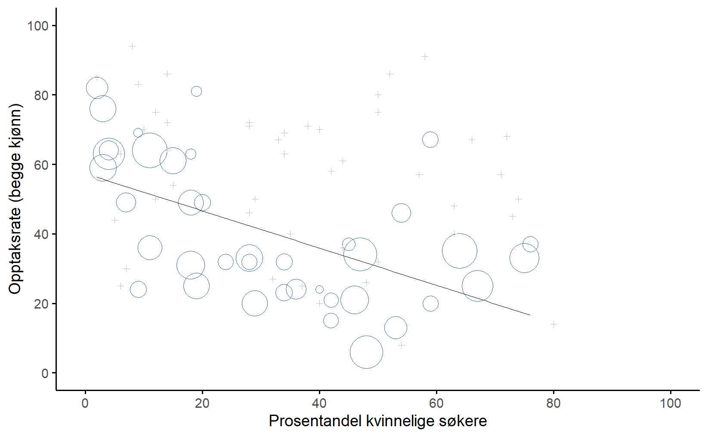

| konklusjonen føles sann | konklusjonen føles usann | |
|---|---|---|
| Argumentet er gyldig | 100\% sier "gyldig" | 100\% sier "gyldig" |
| Argumentet er ugyldig | 0\% sier "gyldig" | 0\% sier "gyldig" |
1 Hvorfor lære statistikk?
\[ \]
Thou shalt not answer questionnaires
Or quizzes upon World Affairs,
Nor with compliance
Take any test. Thou shalt not sit
With statisticians nor commit
A social science
– W.H. Auden1
1.1 Om statistikkens psykologi
Mange blir overrasket over at de skal lære seg kvantitativ metode (statistikk, liksom!) i lærerutdanninga, men svært få blir overrasket over at det kanskje ikke er favorittdelen av lærerutdanninga. Hvis du virkelig digget statistikk ville du sannsynligvis vært påmeldt et statistikkurs nå, ikke et obligatorisk kurs i vitenskapsteori og metode for lærere. Likevel er studentmassen delt på midten i synet på kvantitativ metode, mange ser ikke vitsen, mens mange setter pris på å ha blitt tvunget gjennom stoffet, fordi de setter pris på at de bedre kan forholde seg til forskning etterpå. Med tanke på dette, tenkte jeg at det rette stedet å starte kunne være å svare på noen av de vanlige spørsmålene folk har om kvantitativ metode.
En stor del av dette handler om selve ideen om kvantitativ metode. Hva er det? Hva er formålet med det? Og hvorfor er forskere så forferdelig opptatt av det? Mange forskere bruker statistikk så ofte at de glemmer å begrunne for andre og, kanskje verre, for seg selv, hvorfor de bruker det. Det er en tro blant mange forskere at funnene ikke kan stoles på før man har gjort noe statistikk. Det er en tro blant menigmann at kvantitativ forskning er mer til å stole på enn kvalitativ forskning. “Bigger is better”. Og dette kan ha stor samfunnsbetydning, fordi folk i viktige samfunnsposisjoner deler disse holdningene. Da Nicolai Tangen, lederen for oljefondet, intervjuet psykologen og forskeren Angela Duckworth til podcasten sin, spurte han om det var en sammenheng mellom alder eller kjønn og grit (pågangsmot) (Tangen, 2022, etter etter ca. 40m30s). Angela svarte at man fikk mer grit ettersom man ble eldre, men at kjønn ikke så ut til å ha noen innvirkning, i hvert fall var utvalget hennes så stort at effekten måtte være kjempeliten. Tangen svarte at han var en “big believer in sample size”, men, som du kommer til å lære i løpet av dette kurset, så er det en million andre ting som er viktigere å tenke på enn utvalgsstørrelsen når man skal vurdere Duckworth sine påstander.
Formålet med boka er først og fremst å kunne vurdere slike påstander som Duckworth kom med. Lærere blir bombardert med påstander begrunnet med kvantitative data hele tiden, om elevers lesekompetanse fra PISA-undersøkelsen, om læringseffekten av et nytt IKT-verktøy fra de som ønsker å selge det, og så videre. Hvis du kan vurdere kvantitativ forskning står du bedre rustet til å forholde deg kritisk til alt dette. Et tilleggsformål er å gi et grunnlag i hvordan man utfører kvantitativ metode, for de som kan tenke seg å benytte kvantitative metoder i mastergraden.
Studenter kan tilgis for å tenke at vi alle er ganske sprø, siden ingen tar seg tid til å svare på et veldig enkelt spørsmål:
Hvorfor driver vi med statistikk? Hvorfor bruker ikke forskere bare sunn fornuft?
Det er et naivt spørsmål, men de fleste gode spørsmål er naive. Det finnes mange gode svar på spørsmålet,2 men etter min mening er det beste svaret veldig enkelt: vi stoler ikke nok på oss selv. Vi bekymrer oss for at vi er mennesker, og derfor utsatt for alle de skjevhetene, fristelsene og svakhetene som mennesker lider av. Mye av statistikken er egentlig en sikkerhetsmekanisme. Å bruke “sunn fornuft” for å vurdere bevis betyr å stole på magefølelsen, på verbale argumenter og på den menneskelige fornuftens kraft for å finne det riktige svaret. De fleste forskere tror ikke at denne tilnærmingen vil fungere.
Er det virkelig sannsynlig at denne “sunn fornuft”-tilnærmingen kan være pålitelig? Verbale argumenter må uttrykkes på et språk, og alle språk har skjevheter – noen ting er vanskeligere å si enn andre, og ikke nødvendigvis fordi de er usanne (f.eks. er kvanteelektrodynamikk en god teori, men vanskelig å forklare med ord). Magefølelsen vår oppsto ikke for å løse vitenskapelige problemer, men for å håndtere hverdagslige slutninger – og gitt at biologisk evolusjon er langsommere enn kulturelle endringer, bør vi si at de er laget for å løse hverdagsproblemer i en annen verden enn den vi lever i. Mest grunnleggende krever resonnement med sunn fornuft at folk driver med “induksjon”, altså gjøre kloke gjetninger som går utover dine umiddelbare sanseinntrykk for å gjøre generaliseringer om verden. Dette er vanskelig å gjøre riktig. Ja, som den neste delen viser, kan vi ikke engang løse “deduktive” problemer (de som kun krever logisk tenkning og ikke krever gjetting) uten å bli påvirket av våre forutinntattheter.
1.1.1 Forbannelsen ved eksisterende oppfatninger
Mennesker er stort sett ganske smarte. Vi regnes som smartere enn mange andre arter vi deler planeten med (selv om noen kanskje vil være uenige). Vårt sinn er fascinerende, og vi ser ut til å være i stand til utrolig tanker og resonnementer. Vi er imidlertid langt fra perfekte. Psykologer har vist på et utall måter hvordan vi har vanskeligheter med å være nøytrale og vurdere bevis upartisk uten å påvirkes av våre eksisterende oppfatninger. Et godt eksempel på dette er belief bias: Hvis man ber folk avgjøre om et argument er logisk gyldig (det vil si, at konklusjonen ville vært sann hvis premissene var sanne), har de en tendens til å bli påvirket av hvor troverdig konklusjonen virker, selv når vi egentlig ikke burde bli det. For eksempel, her er et gyldig argument hvor konklusjonen er troverdig:
Alle sigaretter er dyre (Premiss 1)
Noen avhengighetsskapende ting er billige (Premiss 2)
Derfor er noen avhengighetsskapende ting ikke sigaretter (Konklusjon)
Og her er et gyldig argument hvor konklusjonen ikke er troverdig:
Alle avhengighetsskapende ting er dyre (Premiss 1)
Noen sigaretter er billige (Premiss 2)
Derfor er noen sigaretter ikke avhengighetsskapende (Konklusjon)
Den logiske strukturen til argument #2 er identisk med strukturen til argument #1, så begge argumentene er gyldige. Men i det andre argumentet er det gode grunner til å tenke at premiss 1 er feil, og i så fall er konklusjonen også feil. Men dette er helt irrelevant i denne sammenhengen; et argument er deduktivt gyldig hvis konklusjonen logisk følger av premissene. Det betyr at et gyldig argument ikke nødvendigvis må inneholde sanne utsagn.
Og motsatt, her er et ugyldig argument med en troverdig konklusjon:
Alle avhengighetsskapende ting er dyre (Premiss 1)
Noen sigaretter er rimelige (Premiss 2)
Derfor er noen avhengighetsskapende ting ikke sigaretter (Konklusjon)
Og til slutt, et ugyldig argument med en lite troverdig konklusjon:
Alle sigaretter er dyre (Premiss 1)
Noen avhengighetsskapende ting er rimelige (Premiss 2)
Derfor er noen sigaretter ikke avhengighetsskapende (Konklusjon)
Nå, la oss anta at folk virkelig er i stand til å legge til side sine eksisterende oppfatninger om hva som er sant og faktisk klarer å evaluere argumenter basert på deres logiske kvaliteter. Vi ville forventet at 100% av folk sier at gyldige argumenter er gyldige og at 0% sier at ugyldige argumenter er gyldige. Så hvis du gjennomførte et eksperiment som undersøkte dette, ville du forventet å se data som vist i Tabell 1.1.
Hvis dataene så slik ut (eller var veldig nære), ville vi kanskje føle oss trygge nok til å stole på folks magefølelse. Det vil si, det ville vært helt greit å la forskere evaluere data basert på sunn fornuft, uten å bry seg med all denne statistikken. Men hvis du kan noe som helst om psykologi, skjønner du nok hvor dette bærer hen.
I en klassisk studie undersøkte Evans et al. (1983) nettopp dette med et fiffig eksperiment. Det de fant var at når eksisterende oppfatninger (dvs. tro) var i samsvar det logiske argumentet gikk alt slik man skulle håpe, se Tabell 1.2. Folk resonnerte ikke perfekt, men ganske godt.
| konklusjonen føles sann | konklusjonen føles usann | |
|---|---|---|
| Argumentet er gyldig | 92\% sier 'gyldig' | |
| Argumentet er ugyldig | 8\% sier 'gyldig' |
Men se hva som skjedde da de eksisterende oppfatningene gikk på tvers av det logiske argumentet, altså at det logiske argumentet konkluderte ulikt med folks eksisterende oppfatning (Tabell 1.3). Å huff, det er ikke like bra! Det ser ut til at når folk blir presentert for et sterkt argument som motsier våre eksisterende oppfatninger, synes vi det er ganske vanskelig å se at det faktisk er et sterkt argument (folk gjorde det bare 46% av tiden). Enda verre er det når folk blir presentert for et svakt argument som er i samsvar med våre eksisterende oppfatninger; nesten ingen klarer å se at argumentet er svakt – folk tok feil 92% av tiden! 3
| konklusjonen føles sann | konklusjon føles usann | |
|---|---|---|
| Argumentet er gyldig | 92\% sier 'gyldig' | 46\% sier 'gyldig' |
| Argumentet er ugyldig | 92\% sier 'gyldig' | 8\% sier 'gyldig' |
Om du tenker etter, er det ikke slik at disse resultatene er forferdelige. Totalt sett gjorde folk det bedre enn om de skulle svart helt tilfeldig, ettersom omtrent 60% av folks vurderinger var korrekte (du ville forvente 50% ved tilfeldig gjetning), så folk klarer i noen grad å se utover sine egne eksisterende oppfatninger. Likevel, hvis du var en profesjonell “bevisvurderer”, og noen tilbød deg et magisk verktøy som forbedret sjansene dine for å ta riktig beslutning fra 60% til (for eksempel) 95%, ville du antagelig gripe muligheten, ikke sant? Selvfølgelig ville du det. Heldigvis har vi faktisk et verktøy som kan gjøre dette, som kan garantere at du ikke forkaster en hypotese galt med hele 95 % sikkerhet! Men det er ikke magi, det er statistikk. Så det er grunn nr. 1 til hvorfor forskere elsker statistikk. Det er altfor lett for oss å “tro det vi vil tro”. Så istedenfor, hvis vi vil “tro på dataene”, trenger vi litt hjelp til å holde våre personlige fordommer i sjakk. Det er det statistikk gjør, det hjelper oss å være ærlige.
1.2 En advarsel mot å “tro på dataene”: Simpsons paradoks
I forrige avsnitt benyttet jeg uttrykket “å tro på dataene”, et uttrykk jeg misliker sterkt. Du skal nå få høre en fortelling som belyser hvorfor også du bør slutte å “tro på dataene”, “høre på det evidensen sier” og liknende.
Følgende er en sann historie (tror jeg!). I 1973 hadde University of California, Berkeley, noen bekymringer rundt opptakene av studenter til deres videreutdanningskurs. Mer spesifikt var det kjønnsfordelingen i opptakene som forårsaket problemer (Tabell 1.4).
| Antall søkere | Prosent tilbudt plass | |
|---|---|---|
| Menn | 8442 | 44\% |
| Kvinner | 4321 | 35\% |
På grunn av kjønnsfordelingen var de bekymret for å bli saksøkt!4 Med nesten 13,000 søkere er en forskjell på 9 % i opptaksratene mellom menn og kvinner altfor stor til å være tilfeldig. Ganske overbevisende data, ikke sant? Men hva hvis jeg sa til deg at disse dataene faktisk reflekterte en svak skjevhet til fordel for kvinner (på en måte!)? Du ville antakelig trodd at jeg var gal, kvinnefiendtlig eller begge.
Merkelig nok er dette faktisk delvis sant. Da folk så nærmere på opptaksdataene, viste de en litt annen historie (Bickel et al., 1975). Spesielt da de så på opptakene avdeling for avdeling viste det seg at de fleste fakultetene faktisk hadde en litt høyere suksessrate for kvinnelige søkere enn for mannlige søkere. Tabell 1.5 viser opptaksdata for de seks største fakultetene (med navnene på fakultetene fjernet av personvernhensyn):
| Menn | Kvinner | |||
|---|---|---|---|---|
| Avdeling | Søkere | Prosent tilbudt plass | Søkere | Prosent tilbudt plass |
| A | 825 | 62\% | 108 | 82\% |
| B | 560 | 63\% | 25 | 68\% |
| C | 325 | 37\% | 593 | 34\% |
| D | 417 | 33\% | 375 | 35\% |
| E | 191 | 28\% | 393 | 24\% |
| F | 272 | 6\% | 341 | 7\% |
Det bemerkelsesverdige er at de fleste avdelingene hadde en høyere opptaksrate for kvinner enn for menn! Likevel var den totale opptaksraten ved universitetet lavere for kvinner enn for menn. Hvordan kan dette være mulig? Hvordan kan begge disse påstandene være sanne samtidig?
Trekk pusten dypt, for du må trolig konsentrere deg litt for å henge med på forklaringen. For det første, merk at avdelingene ikke har like opptaksprosenter: noen fakulteter (f.eks. A og B) hadde en tendens til å ta opp en høy prosentandel kvalifiserte søkere, mens andre (f.eks. F) avslo de fleste kandidatene. Så blant de seks fakultetene som vises ovenfor er A er det mest sjenerøse, etterfulgt av B, C, D, E og F i den rekkefølgen. Videre, merk at menn og kvinner hadde en tendens til å søke ulike avdelinger. Hvis vi rangerer avdelingene etter det totale antallet mannlige søkere, får vi A>B>D>C>F>E (de avdelingene som var enklere å komme inn på er uthevet). Generelt hadde menn en tendens til å søke til avdelingene som var enkle å komme inn på, altså de med høye opptaksrater. Når vi sammenligner dette med hvordan de kvinnelige søkerne fordelte seg, ser vi at bildet er ganske annerledes. Når vi rangere avdelingene etter det totale antallet kvinnelige søkere får vi rekkefølgen C>E>D>F>A>B. Med andre ord, dataene ser ut til å vise at de kvinnelige søkerne søkte seg til “vanskeligere” fakulteter. Og faktisk, hvis vi ser på Figur 1.1, ser vi at denne trenden er systematisk, faktisk helt slående.
Denne effekten, at sammenhenger som gjelder hele utvalget kan være annerledes i de fleste eller alle undergrupper, er kjent som Simpsons paradoks. Det er ikke vanlig, men det opptrer i virkeligheten, og de fleste blir svært overrasket når de først støter på det, og mange nekter til og med å tro at det er ekte. Det er veldig reelt. Og mens det er mange veldig subtile statistiske leksjoner begravet der inne, vil jeg bruke det til å gjøre et mye viktigere poeng: kvantitativ metode er vanskelig, og det er mange subtile, kontraintuitive fallgruver som lurer. Det er grunn #2 til at forskere elsker statistikk, og hvorfor vi lærer forskningsmetoder. Fordi vitenskap er vanskelig og sannheten ligger utspekulert i skjul i kroker og kriker av kompliserte data.

Historien er tilfredsstillende ved at den virker å avsløre en ugyldig slutning gjennom et fiffig statistisk argument, men det slutter ikke der. Fra et samfunnsvitenskapelig eller psykologisk perspektiv bør vi spørre hvorfor det er markante kjønnsforskjeller i søknadsmønstre. Hvorfor søker menn oftere til ingeniørfag, og kvinner til psykologi? Og hvorfor har avdelinger med flere kvinnelige søkere ofte lavere opptakstall enn de med flere mannlige søkere? Selv om hver avdeling er upartisk, kan dette fortsatt indikere kjønnsforskjeller.
Anta at menn foretrekker “harde vitenskaper” og kvinner “humaniora”. Hva om humaniora har lavere opptaksrater fordi staten ikke finansierer dem like mye som de “harde vitenskapene”, kanskje fordi noen i staten mener humaniora er en “unyttig jenteting”? Dette ville virket kjønnsdiskriminerende. Slike aspekter faller utenfor statistikken, men påvirker hvilke konklusjoner vi kan trekke fra forskningen. Hvis du ser på strukturelle effekter av kjønnsforskjeller, bør du analysere både de samlede dataene og fakultetsdataene. Hvis du derimot er interessert i beslutningsprosessene ved University of California, bør du fokusere på fakultetsdataene.
Det eksempelet viser er at hvilke slutninger du kan trekke fra data eller statistiske undersøkelser avhenger av en fortolkning. Forhåpentligvis har forskerne et bevisst forhold til sitt eget teoretiske ståsted og benytter dette til å fortolke dataene. I så fall kan andre kritisere fortolkningen enten ved at den ikke er i tråd med teorien, eller ved at de er uenige i teorien i utgangspunktet. Hvis forskerne ikke har et bevisst forhold til sitt teoretiske ståsted er det mye verre; da skjer fortolkningen basert på forskernes eksisterende oppfatninger, og disse er uskrevne og diffuse. Da kan ikke andre forskere kritisere fortolkningene på en nyttig måte. Og verre, forskerne vil med all sannsynlighet bare forsterke egne eksisterende oppfatninger og gå ut i verden med en ny klubbe de kan hamre inn argumentet sitt med: “dere må jo lytte til dataene!” Den kjente statistikeren Sander Greenland uttrykte dette godt:
Den største illusjonen om forskning: “La dataene tale for seg selv” Men DATAENE SIER IKKE NOE SOM HELST! De er bare merker på papir eller bits [på en datamaskins harddisk] som bare ligger der og gjør ingenting. Hvis du hører dem snakke, bør du umiddelbart oppsøke psykiatrisk hjelp! (Greenland, 2022, s. 7, min oversettelse)
Kort sagt er det mange kritiske spørsmål som du ikke kan besvare med statistikk, men svarene på disse spørsmålene vil ha stor innvirkning på hvordan du analyserer og tolker data. Og dette er grunnen til at du alltid bør tenke på statistikk som et verktøy for å hjelpe deg med å analysere data og ikke som et verktøy som gir deg svar på forskningsspørsmål. Statistikk er ingen erstatning for teori – statistikken følger fra teorien og er avhengig av den.
1.3 Kvantitative metoder for lærere
Jeg håper at eksemplene ovenfor hjalp med å forstå hvorfor kvantitative metoder og statistikk er viktig i utdanningsvitenskap. Men jeg antar du lurer på hvorfor du som lærerstudent må lære deg noe om kvantitativ metode. Her er et forsøk på et svar: !!!
Kvantitativ metode er premissleverandør for utdanningspolitikk og utdanningsforskning
Kvantitative undersøkelser og statistikk danner ofte grunnlaget for beslutninger i utdanningssektoren.
- PISA-undersøkelser og andre internasjonale komparative studier brukes som argument for reformer og endringer i skolesystemet !!!?sec-ILSA.
- Nasjonale prøver påvirker prioriteringer og ressursfordeling i skolen.
- Elevundersøkelser om trivsel, mobbing og læringsmiljø danner grunnlag for tiltak for å bedre elevene kår.
- Statistikk om karakterer og gjennomføring brukes til å vurdere skolekvalitet og elevprestasjoner.
- Randomiserte kontrollerte eksperimenter blir benyttet til å argumentere for at noen undervisningsmetoder er bedre enn andre
Som lærer vil du måtte forholde deg til premissene for utdanningspolitikk som legges av slike undersøkelser, så hvorfor ikke forstå grunnlaget de bygger på?
Kvantitativ metode hjelper deg å vurdere påstander du møter i læreryrket
Som lærer møter du mange påstander som hevdes å være forskningsbaserte. Læreverk og IKT-verktøy markedsføres som evidensbasert, pedagogiske tilnærminger som er “dokumentert effektive”, rektorer som kommer springende med en ny undervisningsmetode han hørte om på et forskningsseminar. Med grunnleggende kunnskaper i kvantitativ metode kan du kritisk vurdere slike påstander, for eksempel kan du vurdere kvaliteten på utvalget, om målemetodene er pålitelige, om forskningsdesignet er hensiktsmessig, og så videre.
Kvantitativ metode hjelper deg å med assessment literacy, altså å forstå vurderinger
Som lærer mottar du resultater om klassen din på nasjonale prøver, du sitter i evalueringsmøte med skoleledere som lurer på hvorfor klassen din skåret dårligere på tentamen, eller du lurer på hvordan du bør utforme spørsmålene på tentamen. Kvantitativ metode kan gi en grunnleggende assessment literacy som hjelper deg å forberede og tolke vurderingssituasjoner.
Kvantitativ metode hjelper deg som lærerstudent
I løpet av studiet ditt møter du forskningslitteratur som benytter kvantitative metoder. Hvis du kan noe om kvantitative metoder vil du forstå disse bedre.
Kvantitativ metode hjelper deg i hverdagen
Da jeg begynte å skrive forelesningsnotatene mine, tok jeg de 20 nyeste nyhetsartiklene publisert på ABC News-nettstedet. Av disse artiklene inkluderte åtte en diskusjon av et statistisk emne, og i seks av dem ble det gjort en feil. Den vanligste feilen var å ikke rapportere grunnlagsdata (f.eks. artikkelen nevner at 5 % av personer i situasjon X har en egenskap Y, men sier ikke hvor vanlig egenskapen er for alle andre!). Poenget jeg prøver å få frem her er ikke at journalister er dårlige i statistikk (selv om de nesten alltid er det), men at en grunnleggende kunnskap om statistikk er svært nyttig for å finne ut når noen enten gjør en feil eller til og med lyver for deg. Faktisk, en av de største fordelene statistikkunnskap gir deg, er at du oftere blir irritert på aviser eller internett. Du kan finne et godt eksempel på dette i ?sec-A-real-life-example i ?sec-Descriptive-statistics. I senere utgaver av denne boken vil jeg forsøke å inkludere flere anekdoter av den typen.
1.4 Det er mer ved kvantitativ metode enn statistikk
Så langt har jeg stort sett snakket om statistikk, men statistikk er kun en liten del av kvantitativ metode, og i dette kurset skal vi nesten ikke lære noe statistikk – fokuset er på de andre delene av kvantitativ metode. Men det er ikke mulig å ha et kurs i kvantitativ metode uten noe statistikk, og etter de innledende kapitlene om forskningsdesign og måling og slikt går vi i gang med en del om statistikk. !!! DETTE MÅ SKRIVES ORDENTLIG !!!
Sitatet kommer fra Audens dikt fra 1946, Under Which Lyre: A Reactionary Tract for the Times, som ble fremført som en del av avslutningstalen ved Harvard University. Historien bak diktet er ganske interessant, se Adam Kirschs analyse i Harvard Magazine, https://www.harvardmagazine.com/2007/11/a-poets-warning.html↩︎
Et annet godt svar er at sunn fornuft er mangelvare blant forskere.↩︎
I mine mer kyniske øyeblikk tenker jeg at dette forklarer 95% av det jeg leser på internett.↩︎
Tidligere versjoner av denne boka foreslo feilaktig at University of California faktisk ble saksøkt, men det er ikke sant. Alex Reinhart skrev en fin kommentar om dette her: https://www.refsmmat.com/posts/2016-05-08-simpsons-paradox-berkeley.html En stor takk til Wilfried Van Hirtum for å påpeke dette.↩︎